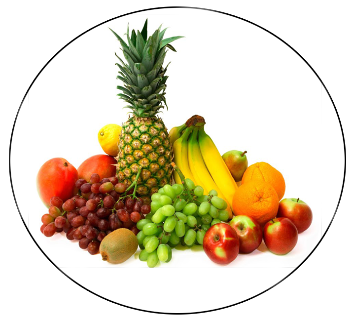

назад
Правильно питание — это питание, обеспечивающее рост, нормальное развитие и жизнедеятельность человека, способствующее укреплению его здоровья
и профилактике заболеваний. Соблюдение правил питания в сочетании с регулярными физическими упражнениями сокращает риск хронических
заболеваний и расстройств, таких как ожирение, сердечно-сосудистые заболевания, диабет, повышенное давление и рак. Современная наука проводит
многочисленные исследования, чтобы оптимизировать рацион питания для профилактики основных хронических заболеваний.
Рекомендации по здоровому питанию
- Внимательно следите за калорийностью продуктов и массой тела.
- Ограничивайте получение энергии из жиров. Насыщенные жиры (животные, твёрдые растительные жиры) — должны составлять
до 1/3 потребляемых жиров, остальные 2/3 жиров должны быть ненасыщенными, жидкими жирами. При употреблении молока и молочных продуктов следует отдавать предпочтение продуктам с пониженной жирностью.
- Стремитесь к увеличению доли фруктов, овощей, цельных зёрен, бобовых и орехов в ежедневном рационе.
- Примерно треть хлеба, круп, муки в рационе должны составлять продукты, обогащённые микронутриентами.
- Ограничивайте употребление простых углеводов (сахара, мёда, сладких газированных напитков) — не более 30-40 г в сутки.
- Ограничивайте употребление поваренной соли и употребляйте только йодированную соль.
- Старайтесь обеспечивать организм витаминами в физиологических количествах, в том числе антиоксидантами (витамины А, С, Е),
фолиевой кислотой. В случае, если ваш рацион не включает достаточное количество витаминов из пищи, можно периодически принимать поливитамины и дополнительно витамин D.
- Консультируйтесь с врачом на темы диет, доверяйте только питанию, разработанному авторитетными учреждениями здравоохранения.
